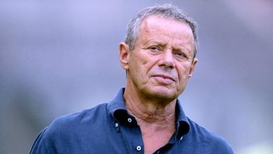

Venezia's Stadio Pier Luigi Penzo first opened in 1913 and takes its name from World War I pilot Pier Luigi Penzo.
Stadio Penzo is the second-oldest stadium in Italy, after Genoa's Stadio Luigi Ferraris.
The stadium, located on the island of Sant'Elena, adjacent to the grounds of the Venice Biennale,
is notable for being primarily accessible by boat.
The record attendance of 26,000 was for a 1966 Serie A match against A.C. Milan.
Originally constructed from wood, the stadium was largely upgraded with a concrete main stand in the 1920s
and further improvements were made in the decades that followed.
On September 11, 1970 a tornado hit Venice and caused extensive damage to the stadium.The stadium was only partially reinstated,
with the capacity reduced to just over 5,000.
When the club rose back up to Serie A in 1998, additional makeshift stands were added, bringing capacity back up to 13,400,
but it has since been reduced again to the current capacity of 7,450.
Upon returning to Serie A after a 12-year absence, the Venezia squad was strengthened, with the arrival of players including Luigi Busidoni, Silvio Di Gennaro, Sergio Stefanini, and, most importantly, Valentino Mazzola.
Mazzola was in Venice for military service, and after having showcased himself playing with military representatives in Campo dei Bacini, Venezia took him on trial and then bought him from Serie C club Alfa Romeo Milano.
In the 1939–40 Serie A season, Venezia finished 10th in the table — highlighted by a win over eventual champions Ambrosiana Inter in Venice — and took a step towards the two most successful seasons in the club's history.
Ahead of the 1986–87 season, Venezia was acquired by businessman Maurizio Zamparini, who would lead the club for the next 16 seasons. After his first season in charge, Zamparini would merge Venezia with mainland club A.C. Mestre, who were also playing in Serie C2. The merger was executed on 26 June 1987. Zamparini temporarily changed the name of the club to Calcio VeneziaMestre, though the club would be renamed Associazione Calcio Venezia in November 1989. With the merger, the club's colors changed from neroverde (green-black) to arancioneroverde (orange-black-green). Further, the team's home matches were moved from Stadio Penzo in Venice to Stadio Francesco Baracca in Mestre. In the 1987–88 season, Venezia achieved promotion from Serie C2 to Serie C1, returning to the third tier for the first time since the 1976–77 season. Over the next two seasons, the team — featuring players including Andrea Poggi, Giancarlo Filippini, and a young Paolo Poggi — steadily improved, and built towards a return to Serie B.
